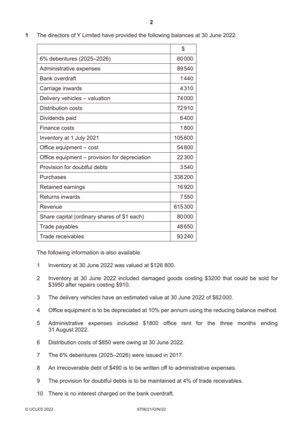

Question 1

Original paper page 2
Part 1(a) — solution
Answer: 448 110
- W2: Administrative expenses $89 540 – 1200 (1) + $490 (1) + $170 (1) + $3230 (1) = $92 230 (1) OF
- W3: Distribution costs $72 910 + $850 (1) + $12 000 (1) = $85 760 (1) OF
Mark points
- W2: Administrative expenses $89 540 – 1200 (1) + $490 (1) + $170 (1) + $3230 (1) = $92 230 (1) OF
- W3: Distribution costs $72 910 + $850 (1) + $12 000 (1) = $85 760 (1) OF
Part 1(b) — solution
Y Limited 10
Statement of financial position at 30 June 2022
$
Non-current assets
Delivery vehicles 62 000
Office equipment 29 070
Mark points
- Include the ideas shown in the solution above.
Part 1(c) — solution
- The rights issue would raise the $60 000 required to repay the debentures. (1)
- Would rights issue be fully subscribed? (1)
- Payment of dividends on ordinary shares is discretionary (1)
- Would avoid the payment of interest. (1)
- Repayment would increase profit for the year by $3600 (1)
- But if finance required in the future would interest be more than 6%? (1)
- But debenture is not repayable for another 3 years. (1)
Mark points
- The rights issue would raise the $60 000 required to repay the debentures. (1)
- Would rights issue be fully subscribed? (1)
- Payment of dividends on ordinary shares is discretionary (1)
- Would avoid the payment of interest. (1)
- Repayment would increase profit for the year by $3600 (1)
- But if finance required in the future would interest be more than 6%? (1)
- But debenture is not repayable for another 3 years. (1)
Part 1 — solution
Dividends paid 24 000 (1)
Bank 24 000 (1)
Mark points
- Include the ideas shown in the solution above.